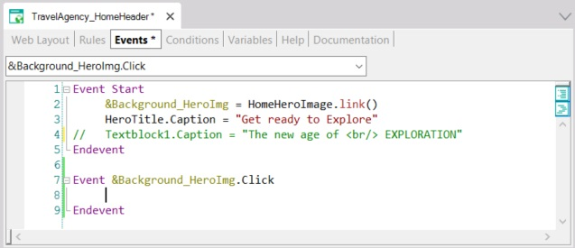
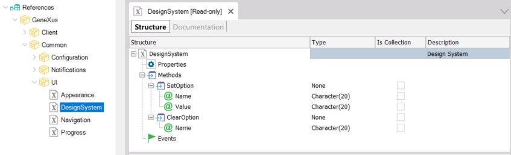
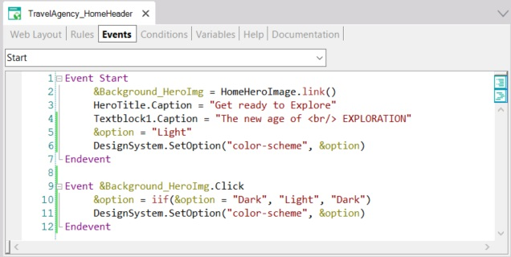

Design System Object - How to configure the Design System Object option
So as not to complicate the design by adding a specific option, suppose that to switch from one mode to another the user will click on the hero image.
To this end, add an event:

There you will change the mode. How?
To configure the options at any time, there is an external object included in the GeneXus module:

Do the following:

Add the .Form class to the styles of the Design System Object, which is used by default in the Main table:
.Form
{
background-color: $colors.Surface;
}
And test it:

Availability
Since GeneXus 17 Upgrade 6.
| Backlinks |
| Toc:Design Systems |